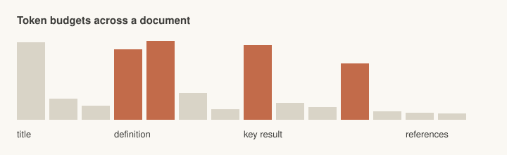

Skimming, explained: how a transformer learns where to read
When you read a long paper, you do not give every sentence the same attention. You skim the related work, slow down at the method, and come back to the key equation more than once. This post is a gentle walk through our paper Learning to Skim, which teaches a transformer to do something similar.
The problem: uniform compute
A standard transformer spends the same amount of computation on every token. For a 32k-token document, most of that work is wasted on boilerplate: author lists, citations, and repeated headers. Static sparsity patterns help, but they cannot know in advance which parts of this particular document matter.
The idea: a learned budget per token
Skimmer adds a tiny controller that predicts a budget $b_i \in [0, 1]$ for each token. The attention logits are scaled by the budgets of the query and the key, so a token with a low budget barely participates:
$$\alpha_{ij} \propto \exp\big(b_i b_j \, q_i^\top k_j / \sqrt{d_k}\big)$$

In code, the controller is only a few lines:
budget = torch.sigmoid(self.proj(h)) # (batch, n, 1)
logits = (q @ k.transpose(-1, -2)) / math.sqrt(d_k)
logits = logits * budget * budget.transpose(-1, -2)
attn = logits.softmax(dim=-1)What we found
On four long-document benchmarks, Skimmer stays within 0.3 points of full attention while using only 38% of the attention FLOPs. More interesting than the number is where the budget goes: definitions, numerical results, and the sentences that answers come from.
The model learns to read like a careful reviewer: fast through the boilerplate, slow where it counts.
The code and checkpoints are on GitHub, and the paper has all the details, including the limitations we are still working on.
12 comments
Great post! — reader42